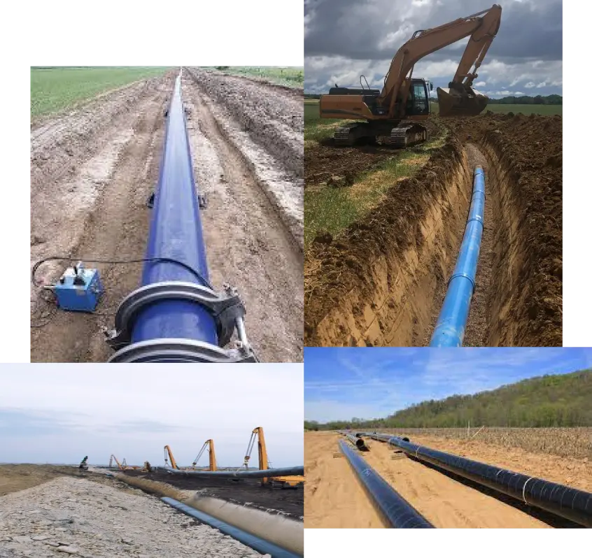

About BAC Infratech Pvt.Ltd.
At BAC Infratech, we pride ourselves on our ability to deliver comprehensive water supply solutions tailored to the unique needs of each project. Whether it's a small-scale residential development or a large-scale municipal infrastructure project, we approach every endeavor with the same level of dedication and attention to detail. Our team of professionals brings a wealth of experience and expertise to every job, ensuring that each installation is completed with precision and efficiency. With a focus on innovation and sustainability, we strive to not only meet but exceed industry standards, setting new benchmarks for excellence in water infrastructure development. When you choose BAC Infratech, you can trust that your project is in capable hands, and that we will work tirelessly to deliver results that exceed your expectations. Let us be your partner in building a better, more sustainable future through reliable water supply solutions.
About BAC Infratech Pvt.Ltd.
Embarking on a comprehensive irrigation project, our team specializes in the planning, execution, and maintenance of pipeline installations for efficient and sustainable water distribution in agricultural settings. BAC Infratech Pvt Ltd specializes in installing water supply pipelines across diverse locations, ensuring efficient water distribution and accessibility. Embarking on a comprehensive irrigation project, our team specializes in the planning, execution, and maintenance of pipeline installations for efficient and sustainable water distribution in agricultural settings.

Embarking on a comprehensive irrigation project, our team specializes in the planning, execution, and maintenance of pipeline installations for efficient and sustainable water distribution in agricultural settings. BAC Infratech Pvt Ltd specializes in installing water supply pipelines across diverse locations, ensuring efficient water distribution and accessibility. Embarking on a comprehensive irrigation project, our team specializes in the planning, execution, and maintenance of pipeline installations for efficient and sustainable water distribution in agricultural settings.
Development works on regular contract basis as well as EPC and Turnkey basis. Apart from infrastructure development, our team specializes in the planning, execution, and maintenance of pipeline installations for efficient and sustainable water distribution in agricultural settings.